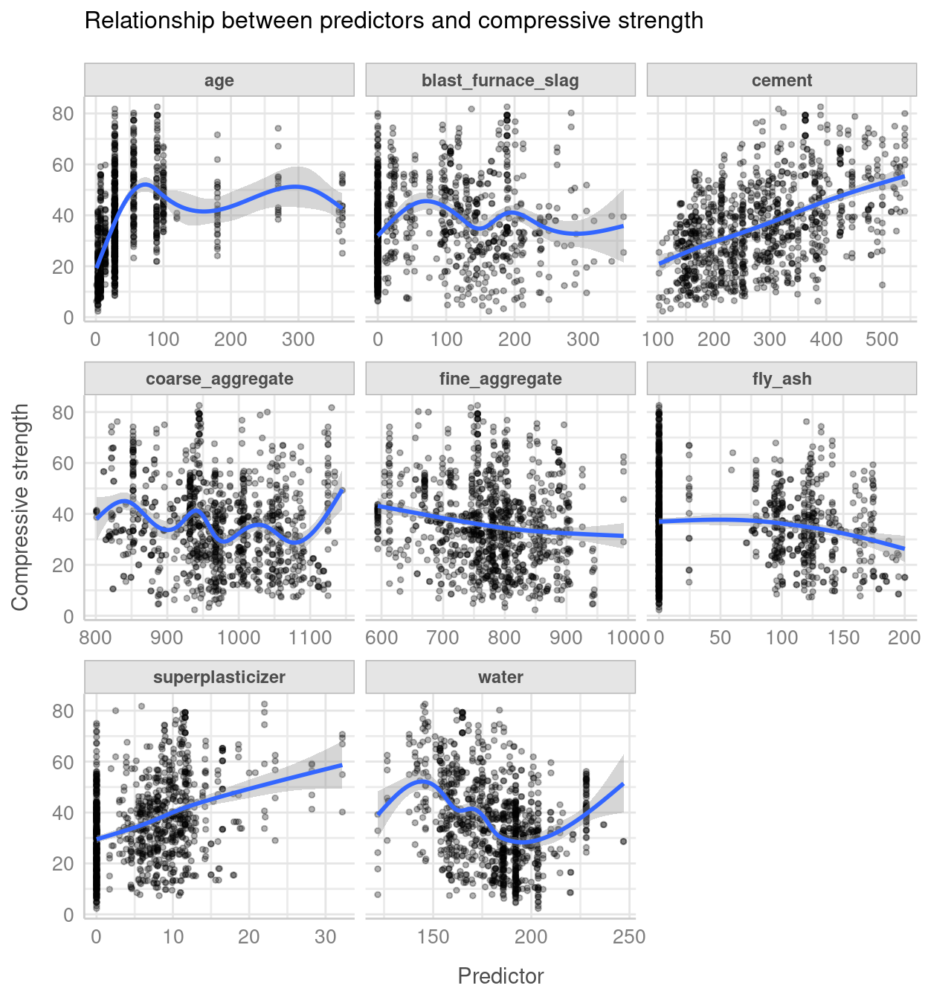
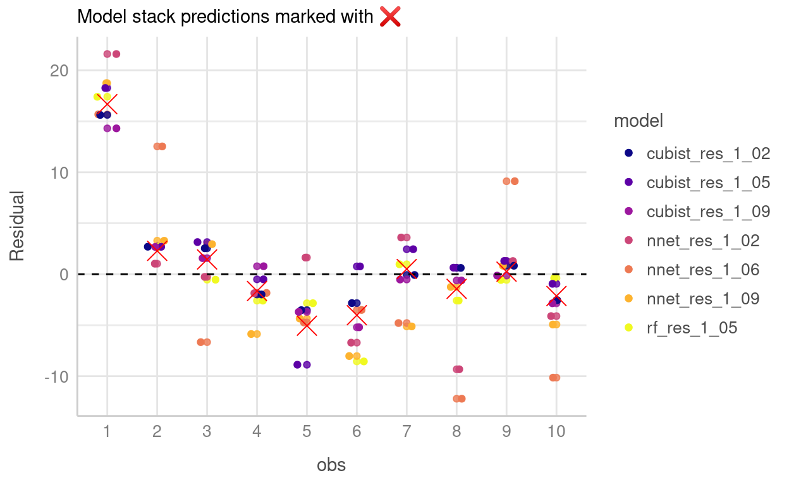

As part of the modelling process, you might try a range of different techniques or algorithms depending on the problem and data, before ultimately picking one model to use. However, no model is perfect and there will likely be a trade off between picking one model over another. One technique that can be used to combine the strengths of different models is to create a model stack. This approach combines individual models into one “stack” that can hopefully outperform any single model. After all, someone of wisdom once said…
The whole is greater than the sum of its parts
…and maybe they were talking about model stacking?
Besides, to get to the point of this post, I wanted to explore the stacks package (Couch and Kuhn 2020) for creating (unsurprisingly) model stacks. stacks a fairly recent development allowing model stacking to be achieved within the tidymodels ideology. Apart from having a great hex logo, stacks provides some powerful tools to create model stacks, and I’ve included a few notes on my first experiences using the package with hopefully a motivating example..!
The problem
Inspired by chapter 10 of Kuhn and Johnson’s (2013) Applied Predictive Modelling, the problem we’ll be addressing is the compressive strength of different mixture of concrete. Yep that’s right, this post is going to be about concrete. But wait! I promise this isn’t as dull as it sounds 😄.
First lets have a quick look at the data.
# dataset is availble in modeldata package
library(modeldata)
library(tidyverse)
library(tidymodels)
library(stacks)
library(rules)
library(see) # for nice theme
data("concrete")
skimr::skim(concrete)
| Name | concrete |
| Number of rows | 1030 |
| Number of columns | 9 |
| _______________________ | |
| Column type frequency: | |
| numeric | 9 |
| ________________________ | |
| Group variables | None |
Variable type: numeric
| skim_variable | n_missing | complete_rate | mean | sd | p0 | p25 | p50 | p75 | p100 | hist |
|---|---|---|---|---|---|---|---|---|---|---|
| cement | 0 | 1 | 281.17 | 104.51 | 102.00 | 192.38 | 272.90 | 350.00 | 540.0 | ▆▇▇▃▂ |
| blast_furnace_slag | 0 | 1 | 73.90 | 86.28 | 0.00 | 0.00 | 22.00 | 142.95 | 359.4 | ▇▂▃▁▁ |
| fly_ash | 0 | 1 | 54.19 | 64.00 | 0.00 | 0.00 | 0.00 | 118.30 | 200.1 | ▇▁▂▂▁ |
| water | 0 | 1 | 181.57 | 21.35 | 121.80 | 164.90 | 185.00 | 192.00 | 247.0 | ▁▅▇▂▁ |
| superplasticizer | 0 | 1 | 6.20 | 5.97 | 0.00 | 0.00 | 6.40 | 10.20 | 32.2 | ▇▆▁▁▁ |
| coarse_aggregate | 0 | 1 | 972.92 | 77.75 | 801.00 | 932.00 | 968.00 | 1029.40 | 1145.0 | ▃▅▇▅▂ |
| fine_aggregate | 0 | 1 | 773.58 | 80.18 | 594.00 | 730.95 | 779.50 | 824.00 | 992.6 | ▂▃▇▃▁ |
| age | 0 | 1 | 45.66 | 63.17 | 1.00 | 7.00 | 28.00 | 56.00 | 365.0 | ▇▁▁▁▁ |
| compressive_strength | 0 | 1 | 35.82 | 16.71 | 2.33 | 23.71 | 34.44 | 46.14 | 82.6 | ▅▇▇▃▁ |
We can also plot the relationship between compressive strength and each of the predictors in the data.
concrete %>%
pivot_longer(-compressive_strength) %>%
ggplot(aes(x = value, y = compressive_strength)) +
geom_point(alpha = 0.3, size = 1) +
geom_smooth() +
facet_wrap(~name, scales = "free_x") +
labs(
x = "Predictor",
y = "Compressive strength",
title = "Relationship between predictors and compressive strength"
) +
theme_lucid()

Fitting the models
In chapter 10, Kuhn and Johnson (2013) evaluate a range of models based on data from Yeh (1998) from which I have selected three of the better performing models (which happen to be random forest, neural network and cubist). The goal is to see whether using stacks to create an ensemble of these models will outperform each of the individual models. Quick note, I’m going to assume some experience with using the tidymodels workflow for modelling to avoid this post become too lengthy. For an introduction to tidymodels, I have a post which covers some of the basics, and you can check out some of the excellent tutorials available on the tidymodels site.
# split the data
set.seed(1)
concrete_split <- initial_split(concrete)
concrete_train <- training(concrete_split)
concrete_test <- testing(concrete_split)
# the folds used in tuning steps
folds <- rsample::vfold_cv(concrete_train, v = 5)
# basic recipe used in all models
concrete_rec <- recipe(
compressive_strength ~ .,
data = concrete_train
)
# metric for evaluation
metric <- metric_set(rmse, rsq)
# protect your eyes!
options(tidymodels.dark = TRUE)
# convenience function
ctrl_grid <- control_stack_grid()
# Basic workflow
cement_wf <-
workflow() %>%
add_recipe(concrete_rec)
# random forest #
rf_spec <-
rand_forest(
mtry = tune(),
min_n = tune(),
trees = 500
) %>%
set_mode("regression") %>%
set_engine("ranger")
rf_wflow <-
cement_wf %>%
add_model(rf_spec)
rf_res <-
tune_grid(
object = rf_wflow,
resamples = folds,
grid = 10,
control = ctrl_grid
)
# neural net #
nnet_spec <-
mlp(
hidden_units = tune(),
penalty = tune(),
epochs = tune()
) %>%
set_mode("regression") %>%
set_engine("nnet")
nnet_rec <-
concrete_rec %>%
step_corr(all_predictors()) %>%
step_normalize(all_predictors())
nnet_wflow <-
cement_wf %>%
add_model(nnet_spec) %>%
update_recipe(nnet_rec)
nnet_res <-
tune_grid(
object = nnet_wflow,
resamples = folds,
grid = 10,
control = ctrl_grid
)
# Cubist #
cubist_spec <-
cubist_rules(
committees = tune(),
neighbors = tune(),
max_rules = tune()
)
cubist_wflow <-
cement_wf %>%
add_model(cubist_spec)
cubist_res <-
tune_grid(
object = cubist_wflow,
resamples = folds,
grid = 10,
control = ctrl_grid
)
So at this point we have fitted 30 models, 10 models for each type (random forest, neural net and cubist). We can do a quick check of how well each of these models performed. For convenience, I’ve created a simple function called finaliser() that selects the best model, updates the workflow, fits the final model with the best parameters and pulls out the metrics.
finaliser <- function(tuned, wkflow, split, model) {
best_mod <- tuned %>%
select_best("rmse")
final_wf <- wkflow %>%
finalize_workflow(best_mod)
final_fit <-
final_wf %>%
last_fit(split)
final_fit %>%
collect_metrics() %>%
mutate(model = model)
}
bind_rows(
finaliser(cubist_res, cubist_wflow, concrete_split, "cubist"),
finaliser(nnet_res, nnet_wflow, concrete_split, "nnet"),
finaliser(rf_res, rf_wflow, concrete_split, "rf")
) %>%
select(model, .metric, .estimate) %>%
pivot_wider(names_from = .metric, values_from = .estimate) %>%
arrange(rmse)
# A tibble: 3 x 3
model rmse rsq
<chr> <dbl> <dbl>
1 cubist 4.17 0.934
2 rf 4.88 0.911
3 nnet 5.74 0.875We can see that the cubist model has the best performance, closely followed by the random forest with the neural net bringing up the rear.
Time to stack
Now we can start stacking! We start by initialising the stack with stacks() then add each candidate model with add_candidates(). Next we evaluate the candidate models with blend_predictions(), before finally training the non-zero members on the training data with fit_members().
cement_st <-
# initialize the stack
stacks() %>%
# add each of the models
add_candidates(rf_res) %>%
add_candidates(nnet_res) %>%
add_candidates(cubist_res) %>%
blend_predictions() %>% # evaluate candidate models
fit_members() # fit non zero stacking coefficients
Let’s have a look at our model stack
cement_st
# A tibble: 7 x 3
member type weight
<chr> <chr> <dbl>
1 cubist_res_1_05 cubist_rules 0.332
2 rf_res_1_05 rand_forest 0.260
3 cubist_res_1_02 cubist_rules 0.183
4 nnet_res_1_09 mlp 0.0890
5 cubist_res_1_09 cubist_rules 0.0765
6 nnet_res_1_02 mlp 0.0735
7 nnet_res_1_06 mlp 0.0154Out of the 30 models we initially trained, 7 models had non-zero stacking coefficients and were retained for our model stack. stacks provides a nice autoplot feature that allows us to quickly visualise each of the model members with their weights that are used to make predictions.
autoplot(cement_st, type = "weights") +
theme_lucid()

So, was it worth it?!
Lets first have a look at the predictions made by our stack.
# get predictions with stack
cement_pred <- predict(cement_st, concrete_test) %>%
bind_cols(concrete_test)
ggplot(cement_pred, aes(x = compressive_strength, y = .pred)) +
geom_point(alpha = 0.4) +
coord_obs_pred() +
labs(x = "Observed", y = "Predicted") +
geom_abline(linetype = "dashed") +
theme_lucid()

Apart from a handful of points, our stacked model looks like it has done pretty well! We can also see how each of the members in the stack performed by using members = TRUE in the prediction call.
member_preds <- predict(cement_st, concrete_test, members = TRUE) %>%
bind_cols(
.,
concrete_test %>%
select(compressive_strength)
) %>%
select(compressive_strength, .pred, everything())
To visualise this, I’ve selected the first 10 observations, and plotted the residuals. Points on the dashed line are closer to the true value.
plot_preds <- member_preds %>%
slice(1:10) %>%
rowid_to_column("obs") %>%
mutate(obs = factor(obs)) %>%
pivot_longer(cols = c(-obs,-compressive_strength), names_to = "model", values_to = "value") %>%
mutate(diff = compressive_strength - value,
model = ifelse(model == ".pred", "model_stack", model)
)
plot_preds %>%
filter(model != "model_stack") %>%
ggplot(aes(x = obs, y = diff, colour = model)) +
geom_point(alpha = 0.8) +
geom_jitter(width = 0.20) +
geom_hline(yintercept = 0, linetype = "dashed") +
viridis::scale_colour_viridis(discrete = T, option = "C") +
labs(y = "Residual", subtitle = paste("Model stack predictions marked with", emo::ji("x"))) +
geom_point(data = plot_preds %>%
filter(model == "model_stack"), colour = "red", shape = 4, size = 5) +
theme_lucid()

Apart from the first observation where none of the models performed particularly well, you can see how different models resulted in different predictions with some performing better than others.
Now what we’re really interested in is if the model stack performed better than any of the individual models. To determine this, lets look at some metrics:
multi_metric <- metric_set(rmse, rsq)
map_dfr(
member_preds,
~ multi_metric(
member_preds,
truth = compressive_strength,
estimate = .x
),
.id = "model"
) %>%
select(model, .metric, .estimate) %>%
pivot_wider(names_from = .metric, values_from = .estimate) %>%
filter(model != "compressive_strength") %>%
mutate(model = if_else(model == ".pred", "model_stack", model)) %>%
arrange(rmse) %>%
mutate(across(where(is.numeric), round, 2))
# A tibble: 8 x 3
model rmse rsq
<chr> <dbl> <dbl>
1 model_stack 4.08 0.94
2 cubist_res_1_09 4.17 0.93
3 cubist_res_1_02 4.32 0.93
4 cubist_res_1_05 4.6 0.92
5 rf_res_1_05 4.9 0.91
6 nnet_res_1_06 6.01 0.86
7 nnet_res_1_09 6.67 0.83
8 nnet_res_1_02 7.28 0.8 We can see the model stack performs better than any of the individual models for both the rmse and r-squared metrics, which is pretty cool! The cubist models are clearly the strongest but the model stack that includes the inputs from the random forest and neural nets as well as cubist edges slightly ahead in these metrics.
Summary
So that was a quick tour of the stacks package. I’d highly recommend checking out the package website which has lots of good examples on which this post was heavily inspired.
Thanks for reading!